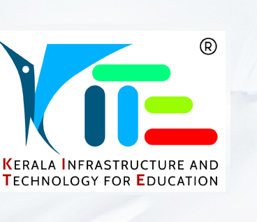

Kerala School Sasthrolsavam 2026-27: science fair season is on, what students and parents should know
Kerala's School Sasthrolsavam for 2026-27 is underway. It is the state school system's own fair ecosystem, run through KITE (Kerala Infrastructure and Technology for Education) under the General Education Department, with five fairs: Science, Maths, Social Science, Work Experience and IT. Students move from sub-district melas to revenue-district fairs to the state Sasthrolsavam. Participation happens through schools, not by individual registration: schools enter their students on the official mela portal, where the 2026 season shows school registration as started. Sub-district melas are running through October, and district fairs begin at the end of October.
At a glance
- What: Kerala School Sasthrolsavam 2026-27, the school fair system run via KITE under the General Education Department
- Who: school students in Kerala, entered through their own school; there is no individual public registration
- The five fairs: Science, Maths, Social Science, Work Experience and IT
- Levels: sub-district mela, then revenue-district Sasthrolsavam, then the state Sasthrolsavam; separate Special School Sasthrolsavam and a VHSE Expo 2026 also run
- Current stage: the official portal shows school registration started for 2026; sub-district melas are being held through October; district fairs begin from 31 October (see the dates section)
- Results: published on the official mela portal, sub-district wise and district wise
- Where: mela.kite.kerala.gov.in (official KITE portal)
The five fairs and what students present
From the official portal's own item overview, checked 26 October 2026:
- Science: collections, charts, short experiments, still models, working models and research-type projects
- Maths: number charts, geometric charts, still models, puzzles, magazines, games and pure construction work
- Social Science: collections, working models, still models, speeches, quizzes, atlas making and local history writing
- Work Experience: practical craft and product work, for example sandal-paste-based craft, screw-pine (kaitha) products, book binding and coconut-shell products
- IT: IT quiz, digital painting, Malayalam typing, Scratch programming and animation
How a student takes part
Checked on the portal on 26 October 2026.
- Participation is through the school. A student cannot register individually on the portal; the school's Sasthrolsavam coordinator enters students and items.
- Schools log in to mela.kite.kerala.gov.in with their Sampoorna username and password. The portal currently shows "School Registration Started" for the 2026 season.
- Students first present at their sub-district mela. Winners move up to the revenue-district fair, and then to the state Sasthrolsavam.
- Results, when published, appear on the portal's sub-district and district results pages, which parents and students can check without a login.
- If your school has not shared dates yet, ask the class teacher or the school's Sasthrolsavam coordinator. Sub-district schedules are set locally, which is why dates differ from place to place.
Where the season stands now
Sub-district melas are running across Kerala through October. For the district stage, recent local news reports give these dates: the Kannur district school science fest opens on 31 October at Thaliparamba, the Vadakara revenue-district fair starts on 5 November, one district fair is reported for 6 and 7 November, and the Ernakulam revenue-district fair is set for 9 and 10 November. Treat these as reported dates and confirm with your school or the district notice, because the official portal had not posted a full 2026-27 schedule when we checked. In fact the portal's "Circular" link for 2026 currently points to a file that is missing (it returns a 404 error), so the portal's instructions page and your school remain the reliable routes for now.
Keep these in mind
- Dates are set level by level: sub-district and district dates come from the education district, not one state-wide calendar page.
- The portal hosts the manual and user guides for schools under Instructions/Downloads; the downloadable manual file currently listed is from an earlier season, so follow your school's instructions for 2026-27 rules and item lists.
- Results pages on the portal fill in as each level completes; a blank result page means the level has not finished, not that your result is missing.
Frequently asked questions
Is Sasthrolsavam a government programme? Yes. It is run for the school system by KITE under Kerala's General Education Department, on the official mela.kite.kerala.gov.in portal.
Can I register my child directly? No. Entry is through the school, which registers students on the portal with its Sampoorna login.
Which classes can take part? School students across the LP to HSS levels take part through their schools; the exact categories for each fair come from the season manual via the school.
Where do I see results? On the mela portal's Sub District Results and district results pages, which are public.
Sources: KITE mela portal (home, instructions, sub-district and district pages), checked live on 26 October 2026, and local news reports for district dates (Times of India for Ernakulam, TrueVision News for Kannur and Nadapuram, Vatakara Varthakal for Vadakara, Lalmedia). This is an AiCoN explainer, not a publication of KITE or the General Education Department.